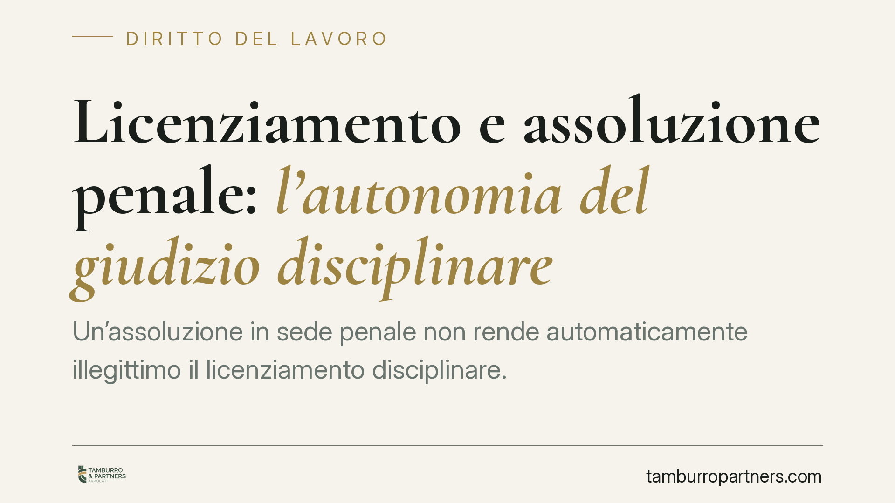

Licenziamento e assoluzione penale: l'autonomia del giudizio disciplinare
Un'assoluzione in sede penale non rende automaticamente illegittimo il licenziamento disciplinare. Giudizio penale e giudizio di lavoro seguono regole e standard probatori diversi: il primo richiede la prova oltre ogni ragionevole dubbio, il secondo si accontenta della maggiore probabilità. Capire questa differenza è decisivo per lavoratori e datori che affrontano una contestazione collegata a un procedimento penale.

Il principio: due giudizi, due logiche
La questione è ricorrente: un lavoratore viene licenziato per giusta causa in relazione a fatti che danno luogo anche a un procedimento penale. Se il processo penale si chiude con l'assoluzione, il licenziamento cade automaticamente?
La risposta, secondo l'orientamento consolidato della Corte di Cassazione, è negativa. Il giudizio disciplinare è autonomo rispetto a quello penale. Il licenziamento per giusta causa può restare legittimo anche in caso di assoluzione, perché i due procedimenti rispondono a finalità e regole diverse.
La ragione è anzitutto probatoria. Nel processo penale la condanna richiede la prova della responsabilità oltre ogni ragionevole dubbio: uno standard molto elevato. Nel giudizio civile e del lavoro vale invece il criterio del "più probabile che non": è sufficiente che la ricostruzione accusatoria risulti più verosimile di quella alternativa. Un fatto può quindi non superare la soglia penale e, al tempo stesso, essere ritenuto provato ai fini disciplinari.
Inquadramento normativo
La giusta causa di licenziamento è disciplinata dall'art. 2119 c.c., che consente il recesso senza preavviso quando si verifica una causa che non consente la prosecuzione, anche provvisoria, del rapporto. Le garanzie procedurali — contestazione dell'addebito, diritto di difesa, termini — sono fissate dall'art. 7 della L. 300/1970 (Statuto dei lavoratori).
Sul rapporto tra i due giudizi occorre richiamare l'art. 654 c.p.p., che regola l'efficacia del giudicato penale nel giudizio civile. Tale efficacia è limitata: la sentenza penale irrevocabile vincola il giudice del lavoro solo quanto all'accertamento dei fatti materiali verificati in dibattimento, e solo se il lavoratore è stato parte del processo penale. Non vincola, invece, quanto alle valutazioni di rilevanza penale di quei fatti.
Il riparto dell'onere della prova resta governato dall'art. 2697 c.c.: spetta al datore di lavoro provare i fatti posti a fondamento della contestazione.
Le formule assolutorie non sono tutte uguali
È qui che serve rigore. L'assoluzione "perché il fatto non costituisce reato" o "perché il fatto non è previsto dalla legge come reato" riguarda la sola qualificazione penale: il fatto storico può essere accaduto e rilevare sul piano disciplinare. In questi casi l'assoluzione incide poco o nulla sul giudizio di lavoro.
Diverso è il caso dell'assoluzione "perché il fatto non sussiste" o "per non aver commesso il fatto", pronunciata con formula piena all'esito del dibattimento: qui l'accertamento che il fatto materiale non esiste, o non è stato commesso dall'imputato, può fare stato nel giudizio di lavoro ai sensi dell'art. 654 c.p.p. Resta però fermo che il licenziamento può fondarsi anche su condotte ulteriori o diverse da quelle oggetto dell'imputazione penale.
La contestazione per relationem
Sul piano procedurale, il datore può formulare la contestazione disciplinare richiamando atti del procedimento penale — ad esempio quelli della Procura — purché il lavoratore sia posto in condizione di conoscerli e di difendersi. È la cosiddetta contestazione per relationem. La condizione essenziale è la specificità: il lavoratore deve comprendere con precisione quali condotte gli vengono addebitate. Un richiamo generico a non meglio precisati atti d'indagine non soddisfa l'art. 7 dello Statuto.
Implicazioni pratiche
Per il lavoratore significa che l'assoluzione non è una garanzia automatica di reintegra o di risarcimento: occorre verificare la formula e distinguere il piano penale da quello disciplinare.
Per il datore significa che il licenziamento va costruito su fatti provabili secondo lo standard civilistico, senza affidarsi all'esito del processo penale. È opportuno valutare le due vicende come distinte sin dall'inizio.
Cosa fare in concreto
- Lavoratore: impugna il licenziamento per iscritto entro 60 giorni dalla ricezione dell'atto (art. 6 L. 604/1966); deposita poi il ricorso giudiziale entro 180 giorni dalla comunicazione dell'impugnazione stragiudiziale, non dal licenziamento.
- Lavoratore: verifica la formula assolutoria e conserva la sentenza penale, utile a dimostrare l'eventuale accertamento che il fatto non sussiste.
- Datore: fonda la contestazione su fatti specifici e documentabili, indipendentemente dagli esiti penali.
- Datore: se usi la contestazione per relationem, assicurati che gli atti richiamati siano accessibili al lavoratore e che l'addebito sia chiaro.
- Entrambi: distingui sin da subito i due procedimenti e i rispettivi standard probatori.
Disclaimer
Contributo informativo a cura di Tamburro & Partners - Avv. Giuseppe Tamburro. Non costituisce parere legale.
Ogni storia di lavoro ha i suoi tempi.
Se gestisci HR e vuoi un confronto su contenzioso, ispezioni o licenziamenti, scrivi allo studio. Ti rispondiamo entro un giorno lavorativo.